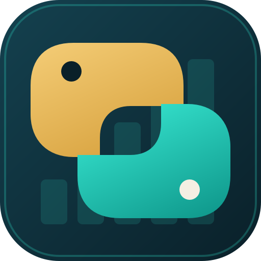
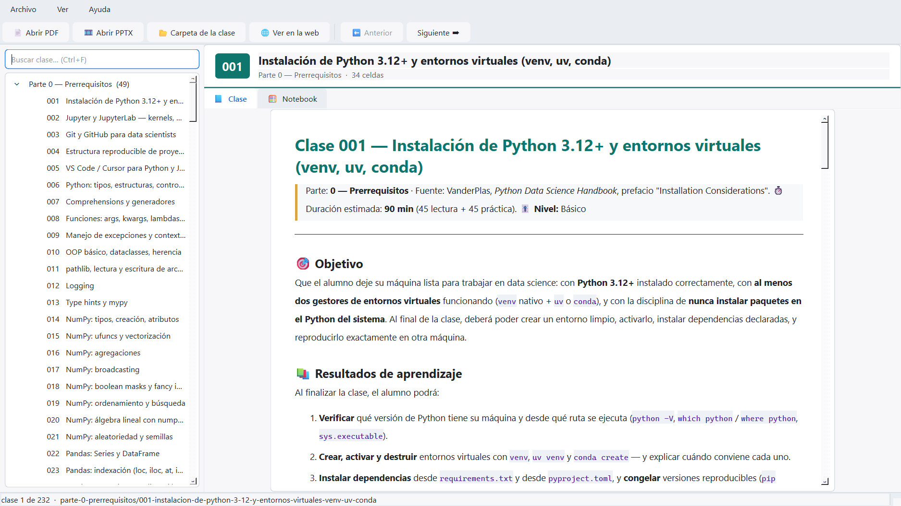
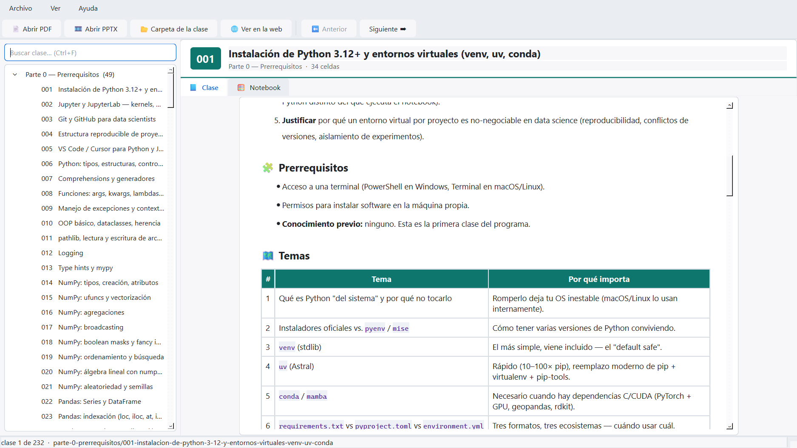
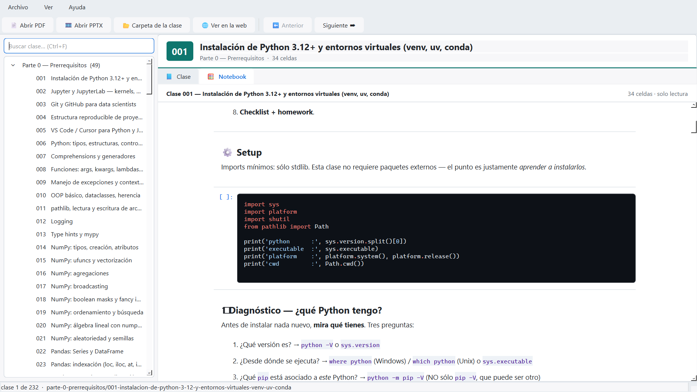
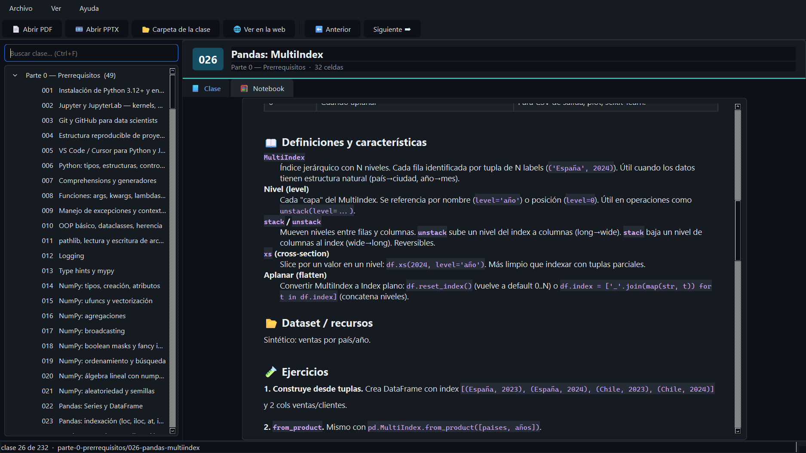
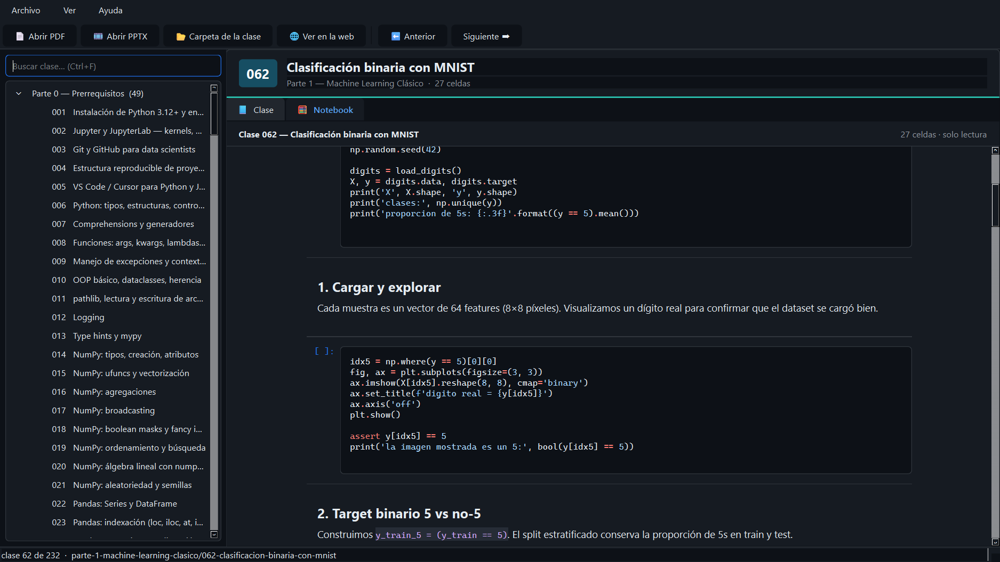
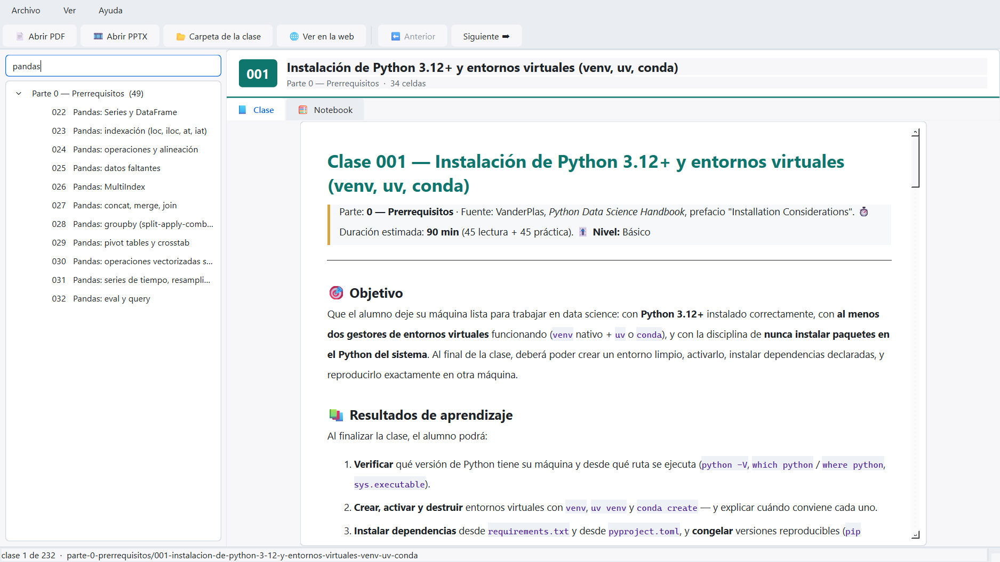

La app de escritorio
Las mismas 232 clases del portal, en una aplicación Windows nativa que funciona sin conexión.
La app es un visor: recorre el currículo completo (árbol de 9 partes, buscador incremental, navegación anterior/siguiente) y muestra cada clase con el mismo contenido que ves en este sitio. No ejecuta código — para eso está el laboratorio Jupyter que se comparte en clase.
Desde la v3.11.0 la clase se renderiza como HTML dentro de la
app, usando el mismo conversor que genera estas páginas
(app/class_html.py). Antes el README se mostraba como markdown plano: sin colores
en el código, sin tablas de verdad y con el texto estirado de lado a lado de la pantalla.
- 📄 Clase en HTML
- 🎨 Código con resaltado de sintaxis
- 📏 Columna de lectura acotada
- 🌗 Tema claro y oscuro
- 🔍 Zoom de texto (Ctrl + / Ctrl −)
- 📴 Funciona sin conexión
Capturas
Capturas reales de la aplicación, generadas automáticamente con
scripts/capture_app_screenshots.py sobre clases del currículo — no son mockups.



.ipynb con resaltado de sintaxis, número de ejecución y salidas (texto, errores e imágenes).


¿Web o app?
Las dos superficies muestran exactamente el mismo contenido, porque las dos se
generan desde los README.md del repositorio. La diferencia es el contexto de uso:
| Necesito… | Usá |
|---|---|
| Compartir un enlace a una clase | Este sitio (GitHub Pages) |
| Estudiar sin conexión | La app de escritorio |
| Leer desde el celular | Este sitio, o la app Android del release |
| Ejecutar el código de la clase | El laboratorio Jupyter del repositorio |